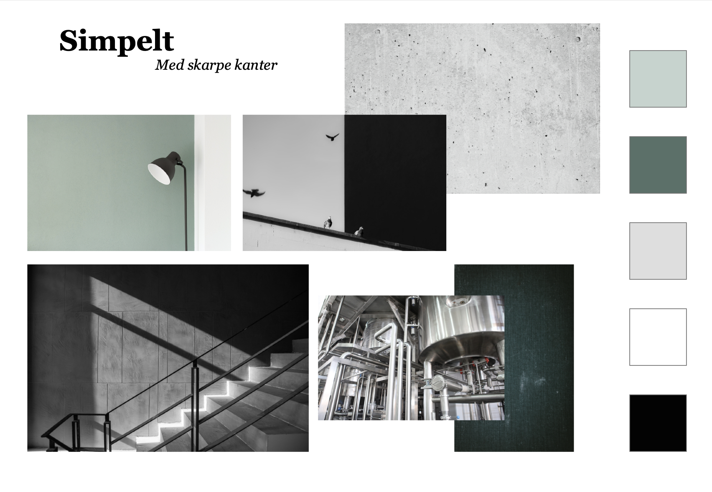
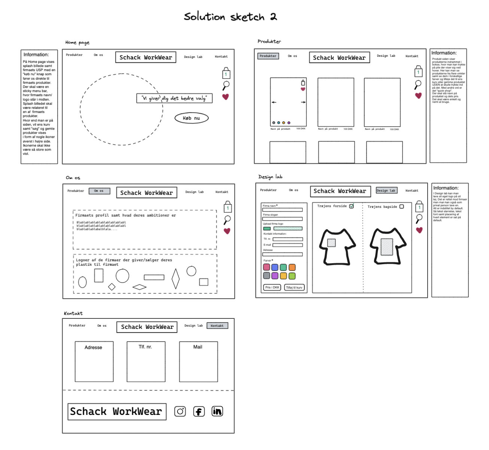

Grundlæggende Webdesign
Link til prototype
Tema 3
I dette tema skulle vi gøre bekendtskab med udvalgte UX-metoder, samt blive bedre til at præsentere vores produkter og formidle research og testresultater til andre. Med dette mentes det at vi skulle få en bedre forståelse for samspillet mellem brugere og brugergrænseflader. Derudover skulle vi lære om teorier, værktøjer og metoder vi kunne benyttes os af til at produktudvikle.
På baggrund af dette fik vi til opgave at udvikle en prototype af en webshop i XD. Kravene lød på at webshoppen skulle sælge t-shirts samt to andre produkter, men ellers var der frit spil til at bestemme hvad ens målgruppe, koncept og priser skulle være etc. Opgaven skulle løses individuel, dog havde man en gruppe at spare sine ideer med undervejs.
Processen
Hele konceptet for min webshop var bygget på ideen om behageligt og bæredygtig arbejdstøj. Jeg ønskede at mine t-shirts skulle laves af genbrugsplast fra håndværkernes egne arbejdspladser, da det forhåbentligt kunne vække en større interesse hos min målgruppe.
Processen for denne opgave var baseret på forskellige metoder til at komme frem til sit endelige koncept. Her i blandt Desk Research. Med Desk Researchen tog man et kig på allerede eksisterende hjemmesider/firmaer for at få ideer til hvad man selv ville lave (både visuelt på hjemmesiden men også koncept mæssigt i forhold til hvilken målgruppe man ville gå efter).
Efterfølgende indsamlede vi i klassen data omkring hinandens shopping vaner på nettet, i form af et spørgeskema. Dette skulle hjælpe os med at få en bedre ide omkring, hvilke ting der ville være gode at have på en webshop og hvilke ting man måske skulle overveje at undlade at have med.
Alle disse øvelser, spørgeskemaer og interviews der blev lavet endte så ud i at vi skulle lave vores prototype af webshoppen i XD. Dernæst testede vi hvordan folk ville navigere rundt på vores webshop for at kunne opdage eventuelle designfejl, men også observere hvad folk syntes fungerede godt.
Moodboard
Skitse af site
Info om målgruppen